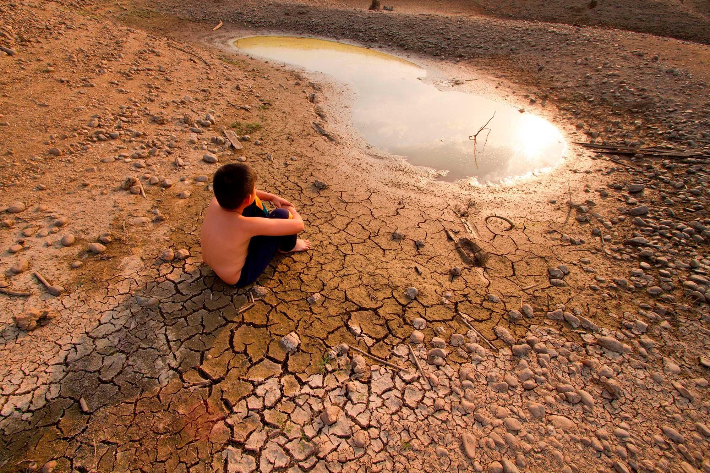
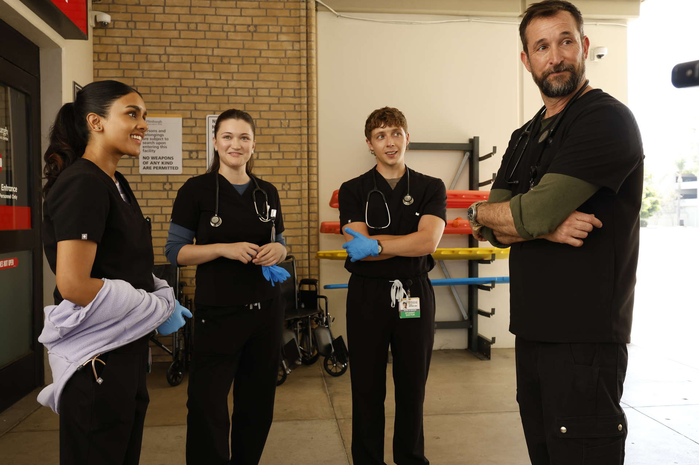

Noticias Generales
Crisis climática en Chile: ¿qué tanto nos afecta el cambio climático actualmente?Medioambiente  Chile es reconocido a nivel mundial como uno de los territorios más vulnerables al cambio climático debido a su extensa diversidad climática y geografía longitudinal (René Garreaud y otros autores, 2017). El país alberga al menos siete de los principales tipos de clima del mundo, desde el desierto de Atacama en el norte, uno de los más áridos del planeta, hasta el clima templado lluvioso del sur y los climas fríos de la Patagonia y la Antártica (Dirección Meteorológica de Chile (DMC), 2023). Considerando la gravedad de los efectos del cambio climático, diversas instancias sociocientíficas no solo han identificado sus impactos, sino que también han impulsado acciones para mitigarlos y adaptarse a ellos. Más allá del invaluable trabajo que realizan centros de investigación, entidades gubernamentales y organizaciones de la sociedad civil, el factor clave y determinante radica en la Educación Ambiental para el cambio climático. |
Educación digital en debate: ¿cómo manejar la nueva restricción del uso de celulares?Educación Llegó marzo y con ello la vuelta a clases en los colegios y liceos del país. Pero este año es diferente a los anteriores, ya que está rigiendo la ley que regula el uso de celulares y otros dispositivos móviles dentro de los establecimientos educacionales, tanto en los públicos como en los privados. Cabe mencionar que la ley ya establece algunas excepciones: cuando se requiera ayuda técnica acreditada por un profesional; emergencia o catástrofe; situaciones de desastre o peligro inmediato; condición de salud; monitoreo médico periódico acreditado por certificado; uso pedagógico, sólo para básica y media, si la actividad lo requiere; seguridad personal; solicitud fundada del apoderado en forma temporal. Fuente: Meganoticias |
The Pitt: La nueva serie que busca representar la realidad del sistema de salud.Salud  Ganadora de varios premios Emmy, The Pitt —disponible a través de HBO Max— construyó una base de seguidores muy fiel desde su estreno en Estados Unidos en 2025. Desde entonces, el entusiasmo del público no ha dejado de crecer. En redes sociales abundan los memes inspirados en la serie y, fuera de la pantalla, muchos fans incluso gritan frases del programa cuando se cruzan con los actores en las calles de Los Ángeles. Pero el fenómeno va más allá del entretenimiento, porque también abrió espacio para hablar de temas de salud que suelen quedar fuera del debate público. A lo largo de sus episodios, la serie aborda cuestiones como la donación de órganos, la demencia y los riesgos asociados con algunas tendencias de belleza que circulan en TikTok. Escucha el adelanto de la temporada a continuación: Fuente: Warner Channel |